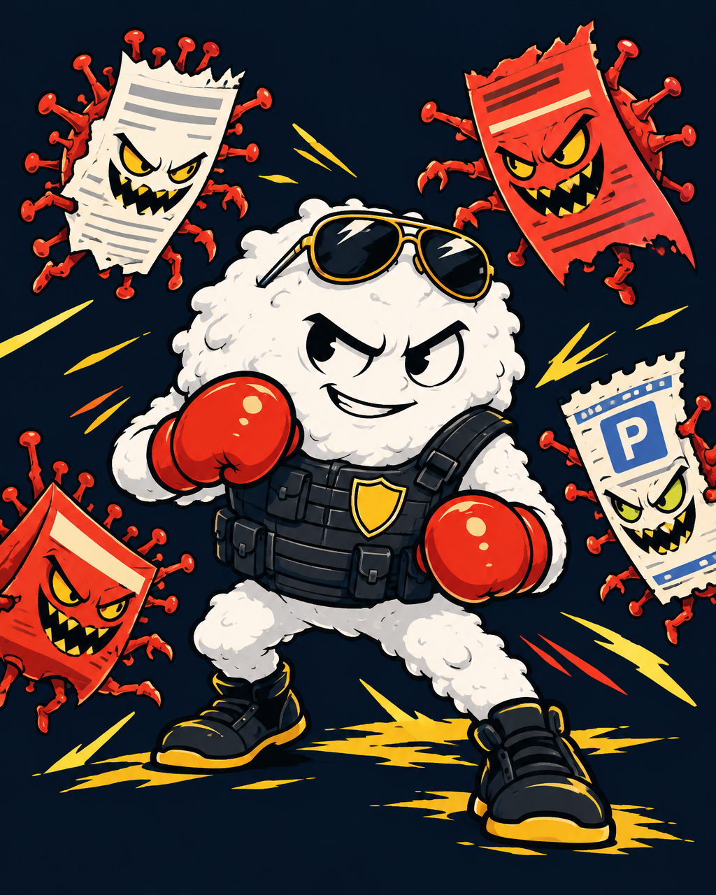
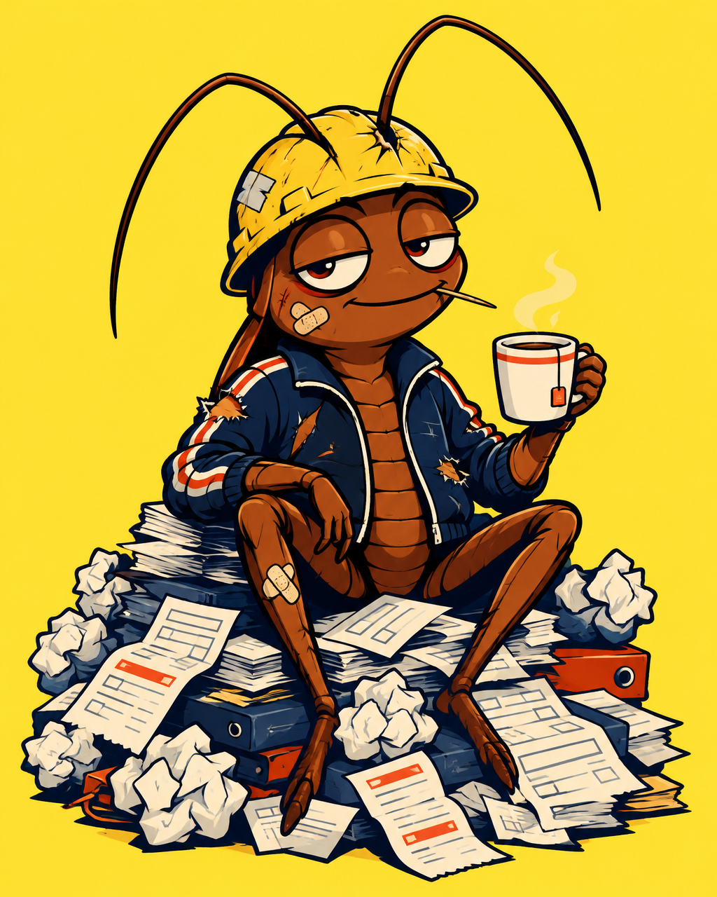
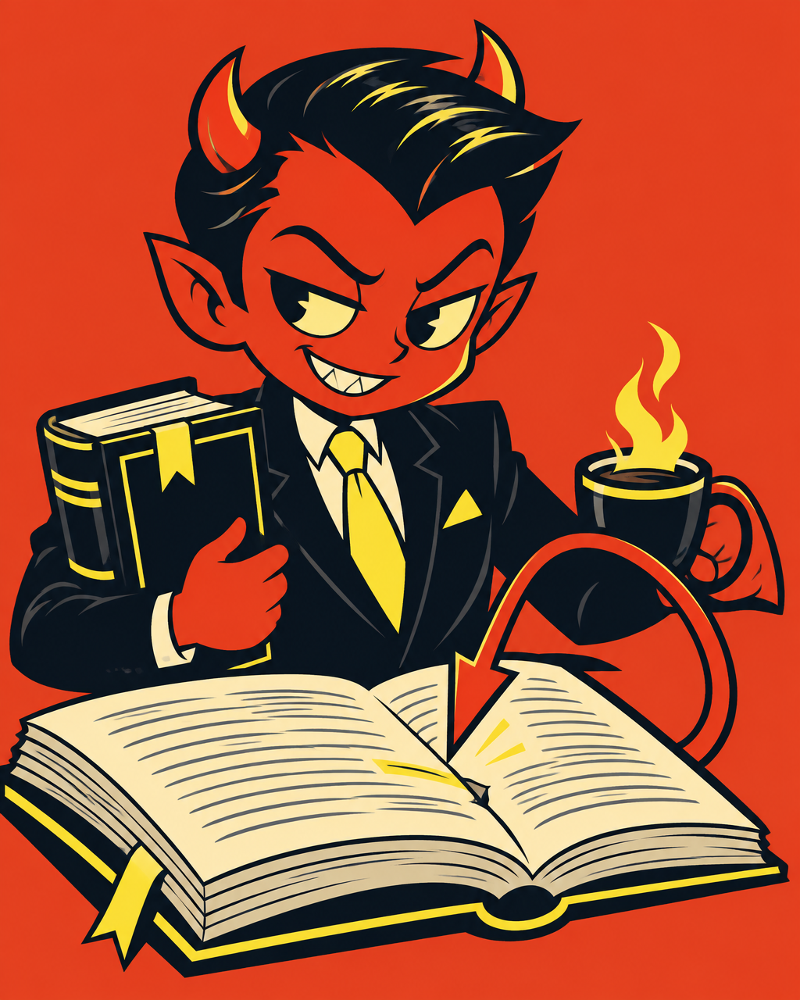

Лейко
телохранитель-лейкоцит
«Штрафовирус активизировался. Прививка — в описании»

Кот Статья
циничный кот-юрист
«Мяу. В смысле — ч. 2 ст. 12.9 КоАП. Плати»

Выживший
таракан, переживший все реформы
«Я пережил деноминацию. И это переживу. Наверное»

Адвокат дьявола
бес-юрист с лазейками
«Закон хотел тебя нагреть. Но есть пункт 4…»